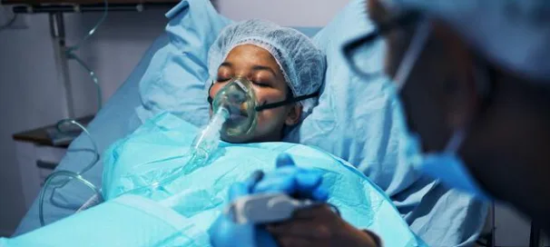
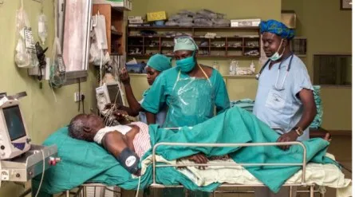

Expanded Nursing Uganda Explanation
Post-operative Care should be understood beyond a short definition. Link the concept to patient history, focused assessment, common risks, nursing priorities, documentation and evaluation of outcomes.
01 Post-Operative Nursing Care
Post-operative nursing care refers to the specialized care provided to patients following a surgical procedure . This care focuses on monitoring, managing, and supporting the patient’s recovery through a variety of interventions and assessments.
02 Aims or principles of post-operative care
- Prevent, Recognize, and Treat Complications : Through skillful observation and application of knowledge, proactively identify and manage potential complications throughout the recovery period, from unconsciousness to discharge.
- Ensure Patient Comfort: Prioritize pain management, provide emotional support, and create a comfortable and safe environment to promote healing and well-being.
- Restore Maximum Health and Independence : Guide the patient towards optimal physical and functional recovery, enabling them to regain their independence and return to their desired lifestyle.
03 Immediate care of a patient recovering from anesthesia
Transporting the patient from the operating room to the recovery room
Following the completion of the operation, the operating room staff generally dresses the patient in a clean gown and moves the patient to the stretcher. Care is taken to avoid:
- Exposing the patient, which predisposes them to respiratory infections and shock.
- Rough handling, which may place a strain on the sutures.
- Hurried movements and rapid position changes, which predispose the patient to hypotension.
Recovery Room Care
After arriving, the patient is either transferred to a bed from a stretcher or left on the couch. The patient is positioned supine with the head turned to one side and the chin extended forward. This is done because the patient is unconscious or semi-conscious from anesthesia, and this position helps to avoid respiratory obstruction from a relaxed tongue falling back into the throat, or by aspiration of mucus, blood, and/or vomitus. This positioning also allows secretions to flow out or for easy suctioning.
Baseline assessment of the patient is done, including:
- Vital signs : blood pressure, pulse, respiratory rate, airway patency, depth of respirations, chest expansion, and the color of the skin.
- Visual assessment of the patient, presence of IV infusions, drains, or special equipment.
- The time of admission to the recovery room.
- The absence of reflexes , e.g., pharyngeal or swallowing reflex, to ensure proper positioning of the head (lateral head position with the neck extended forward until the patient is swallowing).
- The patient’s level of responsiveness upon admission (e.g., touch, pain, sound, movement, etc.).
- The temperature and vital signs , which are taken every 15 minutes until stable, then every 30 minutes for the next 2-3 hours. Temperature is taken every 2-4 hours, depending on recovery policy.
- The quality and rate of respirations . If in distress, oxygen is given, and the anesthetist is informed of respiratory depression or change in ventilatory pattern. Arterial blood gas is determined, and mechanical breathing aids are employed to resuscitate the patient (e.g., intubation, tracheostomy, ambu-ventilation, suctioning, etc.).
- The presence of an airway/mouthpiece meant to keep the tongue from falling back. Sometimes the patient may push this away as they regain consciousness.
- Skin color and dryness . A pale, cold, sweating skin is one sign of shock. Also, observe the lips and nail beds for pallor and cyanosis. Run the fluids as prescribed.
- The condition of the dressing : if soiled, note the color, type, and amount of drainage.
- The presence of drainage tubes (e.g., thoracic, abdominal, gastric catheters). Check if the patent, clamped, whether to be connected to suction apparatus, and whether they are draining.
- The IV infusions : note the type of IV infusion solutions, amount left in the bottle, the rate of the drip, infiltrations, and orders for any other fluid to follow. Check if medications have to be added to the IV or if there are orders for any to be added.
- The presence of a blood transfusion : note if BT is running or if one is ordered. Watch the rate of the drip and carefully for signs of a reaction.
- Any unusual symptoms like airway obstruction, arrhythmias, signs of shock, hemorrhage, marked temperature elevation, and signs of circulatory overload from excess IV fluids.
After the patient stabilizes (i.e., in 2-3 hours) and recovers from anesthesia, they are discharged from the recovery room by the anesthetist or surgeon. The ward nursing staff is informed to come and collect the patient.
Patient is Collected from the Recovery Room Back to the Ward
- The ward nurses are informed about the patient to be collected from the recovery room after stabilizing.
- A verbal report is given by the recovery room nurse to the two nurses who have come to collect the patient. This report covers the type of operation done, vital signs, the level of consciousness, wound status and drainages, infusions and blood transfusions, resuscitation done, anesthesia, problems the patient had during surgery (such as vomiting or stoppage of breathing), urinary drainage, and other post-operative instructions.
- Brief taking of vital parameters is done by the ward nurses to confirm the report from the theater and to prove that the patient is alive.
- The patient is rolled back to the ward with the legs in front and the head behind for easy resuscitation by the nurse behind should there be any problem.
- The patient is gently lifted from the stretcher to the bed prepared before, and care of the anesthetized patient is instituted immediately.
04 Immediate Post-Operative Care in the Ward
Care of Anesthetized Patient in the Ward:
The patient should not be left alone during this period because of the danger of asphyxiation, shock, falls, and hemorrhage.
Position :
- This varies with the type of surgery . It can be supine with the head turned to one side to prevent the bulky tongue from falling back by gravity over the pharynx and blocking the airway, and to promote drainage of saliva from the mouth.
- The head can be made lower than the shoulders to prevent the flow of fluids into the trachea, allowing secretions to pool in the cheek, making removal easier, and preventing obstruction and pneumonia. The usual position is modified Sims.
Respiratory Status : Assess the quality, depth, and rate of respirations, as well as the skin color and temperature, which indicate adequate oxygen exchange.
Neurologic Status/Level of Responsiveness : Determine whether the patient is alert and oriented, unconscious, confused, restless, etc.
Cardiovascular Status : Obtain vital signs, and check the color and temperature of the skin.
Wound :
- Check for drainage and bleeding, and connect any drainage tubes to the suction machine or collection bag.
- See if the dressings are soiled, and look and feel under the patient to detect pooling of blood.
Tubes : Ensure catheters, NGTs, and infusion lines are patent, check the rate and amount, look for drainage or blockage, and verify proper attachment to drainage systems.
Discharge Advice/Health Education on Home Care of the Patient:
- The length of time needed for a patient to recover from surgery depends on the patient’s physical and mental condition prior to surgery, the magnitude of the surgery, and the development of any post-operative complications.
- Assess the knowledge and understanding of the patient about the surgery and the preventive measures.
- Look for learning readiness and the ability of the patient and/or family members to provide care and skills needed to perform procedures at home.
- Teach the patient to report pain in any area, temperature elevation, cough and sputum of abnormal color, loss of energy, nausea and vomiting, change in urine characteristics, difficulty in breathing, abnormal drainage, and sudden weight loss. These are signs of complications.
- Emphasize the importance of hand washing prior to meals, performing any procedure of care, and toileting.
- Practice together with the patient coughing, breathing, and exercises to prevent pulmonary complications.
- Advise the patient to avoid smoking or contact with people with RTIs.
- Encourage the patient to continue with physical exercises, increase activity when necessary, and stop when tired. Exercises promote activity to maintain circulation and normal functioning of the systems.
- Inform the patient to take plenty of fluids, vitamins, and electrolytes to maintain fluid/nutritional status for health (wound healing, skin integrity, elimination, liquefy secretions).
- Teach the patient how to care for the wound: dressing change, cleansing, and skin care. Allow practicing aseptic technique in wound care and protection of the wound when bathing to maintain a clean, dry, healing wound.
- Educate the patient on how to take drugs: checking their actions, dose, route, frequency, side effects, and food and drug interactions to ensure compliance.
- Instruct the patient to modify their home environment to clear pathways of rugs, provide good lighting, and use articles to hold onto when walking, wearing firm and good-fitting shoes to ensure safety and prevent accidents.
- Discuss the care of appliances such as fixators, plaster of Paris, and prostheses for the purpose of safe usage and optimal effect of supportive aids.
- Provide information on where to find supplies and equipment for home care.
- Give the patient contact information and the phone number of the doctor or other staff for easy follow-up or emergency calls.
POST OPERATIVE CARE
Requirement
- As for Postoperative bed
Procedure
- Steps Action Rationale
- 1 Two ward nurses (Senior and Junior) collect the patient from the theatre. To ensure the patient’s safety.
- 2 Receive full report of the patient’s condition from Surgeon, anaesthetist and theatre nurse. To promote continuity of quality care and legal purpose.
- 3 Take the patient to the ward while observing consciousness, color of the patient and maintain a clear airway. –
- 4 Screen the patient bed. To ensure privacy.
- 5 Pull the prepared bed away from the wall and push the theatre trolley up against the bed. Roll the patient from trolley to bed. This enables safe lifting of the patient.
- 6 Position the patient in an appropriate position depending on the surgery done and making sure the airway is maintained clear. To maintain patient airway and aid free drainage of secretions.
- 7 Leave the airway piece in position until the patient regains consciousness. To prevent the tongue from falling back and causing obstruction.
- 8 Check the surgeon’s post-operative instructions regarding operation and care i.e. intravenous fluid therapy, medicines, nutrition, and positioning. To promote continuity of quality care.
- 9 Stay with the patient until the patient is conscious. Take vital observations as prescribed or at intervals ¼ to ½ hourly depending on the patient’s condition. Monitor and evaluate patient’s conditions and timely interventions.
- 10 Observe the incision site for bleeding and drainage tubes for functionality. –
- 11 Carry out special nursing procedures as prescribed i.e. suction, intravenous fluids. –
- 12 Provide warmth to the patient. To prevent hypothermia.
- 13 Document all the care provided and report accordingly. Monitor progress and provide appropriate interventions.
- 14 Give a pillow to the patient when fully conscious, and more pillows as required. To aid comfort.
- 15 Observe fluid intake; give Intravenous fluids as prescribed and encourage oral fluid as indicated; measure and record in fluid balance chart. Monitor fluid balance.
- 16 Observe fluid output: Encourage the patient to pass urine or empty the drainage bag, measure and record the amount passed. –
- 17 Administer post-operative medicine as prescribed by the doctor. Promote healing or treat pain.
- 18 Assist the patient to perform different exercises as taught before operation. Prevent post-operative complications.
- 19 Offer general nursing care to postoperative patient. –
Points to Remember:
- Take note of the irregularities in vital observations:
- A rising pulse rate and/or decreasing pulse volume.
- A falling or inaudible blood pressure recording.
- Slowing, rapid, or noisy respirations.
- For the skin note; the color, feel of the skin, i.e. cold or clammy.
- Dressing; note, any oozing or bleeding from the incision site. In case of bleeding is present add more sterile dressing and bandage in position, and report immediately to the nurse in charge or the doctor.
- Special nursing care is given to patients as per operation and condition.
PERI-OPERATIVE CARE (Summary)
PRE-OPERATIVE:
- Admission
- Explanation to the patient about the nature of the surgery and the possible outcomes.
- Informed Consent for admission and surgery.
- Vital observations and other lab investigations, radiological investigations to get a baseline.
- Preparation of the body and mind through counseling and continuous reassurance. This helps to allay anxiety as well.
- Talk to the patient and answer questions of their concerns to reduce fear/anxiety.
- Spiritual care if one so wishes; respective church leaders are allowed to come and see the patient.
- A baseline Physical examination, e.g., weight, height, nutritional status, needs to be assessed prior.
- Site preparation: involves marking/labeling, 48 hours shaving if hairy.
- Removal of jewelry and rings.
- Removal of dentures and prostheses.
- Inserting an IV line.
- Rehydration with IV fluids.
- Administration of premedication drugs.
- Perform required procedures like inserting NGT, catheterization, bowel irrigation.
- Ensure enough rest and sleep.
- Educate on anticipated activity post-operatively.
- Starve the patient prior as per order (nil per os).
- Make a post-op bed with all the necessary accessories required, e.g., oxygen, suction apparatus.
POST-OPERATIVE CARE:
- Reception from theatre with all the necessary instructions.
- Vital parameters monitoring.
- Monitoring for bleeding, and signs of shock.
- Admission to a warm postoperative bed from the theatre.
- Intravenous infusion with fluids and prescribed drugs.
- Fluid balance chart recording and monitoring.
- Ongoing post-op medication.
- Bowel and bladder care.
- Rest and sleep.
- Proper management of drainages, e.g., abdominals, etc.
- Proper positioning to relieve pain.
- Diet/nutrition.
- Wound care.
- Pain management.
- Bed hygiene.
- Body/skin hygiene.
- Physiotherapy, e.g., breathing exercises.
- Psychological care.
POST-OPERATIVE COMPLICATIONS:
- Hemorrhage; can be primary or secondary.
- Pain.
- Shock.
- Wound infection/sepsis.
- Hypostatic pneumonia due to constant lying on the bed.
- Delayed healing.
- Paralytic ileus.
- Adhesions.
05 Nursing Uganda Clinical Lens
Use Post-operative Care as a practical nursing topic, not only a memorized definition. Prioritize airway, breathing, circulation, pain, asepsis, wound healing and early complication detection.
- What to understand first: define post-operative care, identify the normal or expected pattern, then explain what changes when the patient is unwell.
- Why it matters in care: the nurse must recognize risk early, explain findings clearly, document accurately and know when to escalate.
- How to revise it: connect each point to assessment, nursing diagnosis or care problem, intervention, rationale and evaluation.
06 Assessment Guide
- Vital signs, pain, bleeding, perfusion, level of consciousness and injury pattern.
- Wound appearance, drainage, odour, swelling, temperature and surrounding skin.
- Fluid balance, mobility, nutrition, surgical site risk and ordered investigations.
07 Nursing Priorities, Rationales and Outcomes
- Stabilize urgent problems first, then prepare for investigations or theatre care.
- Maintain aseptic technique, pain control, wound care and documentation.
- Prevent shock, infection, pressure injury, deep vein thrombosis and delayed healing.
The rationale for these priorities is patient safety: nursing actions should prevent deterioration, reduce discomfort, support recovery and create clear evidence for the next caregiver.
- Expected outcome: The patient remains stable, wound healing progresses, pain is controlled and complications are recognized early.
08 Patient Teaching and Revision Check
- Explain post-operative care in simple language the patient or caregiver can repeat back.
- Teach warning signs, medicine or follow-up instructions, hygiene or lifestyle points where relevant.
- For exams, prepare a short answer using: definition, causes or risk factors, signs, assessment, management, complications and prevention.
- For ward practice, document baseline findings, actions taken, patient response and the plan for review.
Illustrations and Diagrams (7)




Related Video Lectures
Watch nursing lecture videos on YouTube for this topic. Opens in a new tab.
Watch on YouTubeExternal link: YouTube may use its own cookies and terms. Nursing Uganda is not affiliated with YouTube.